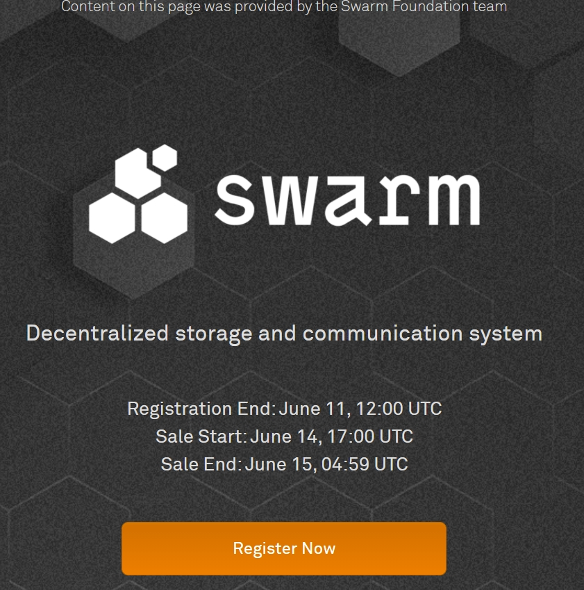
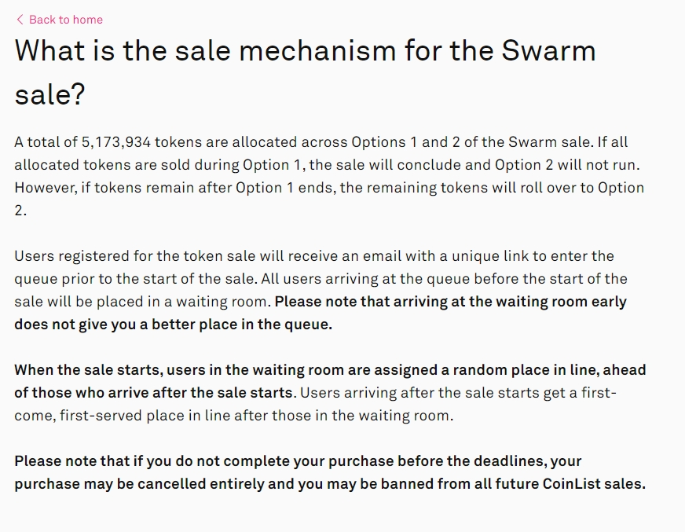
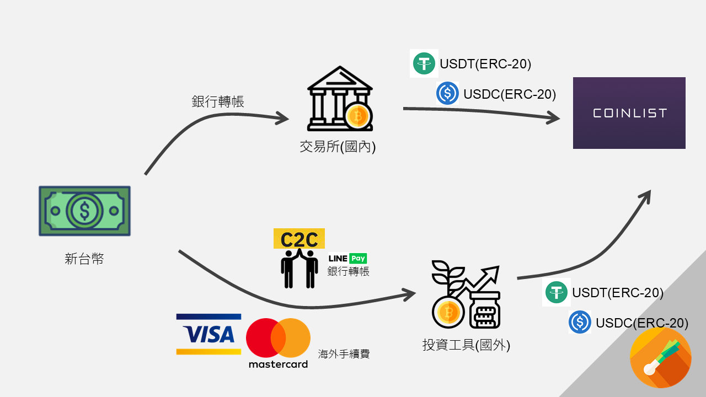
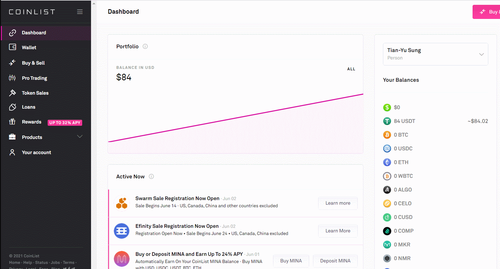
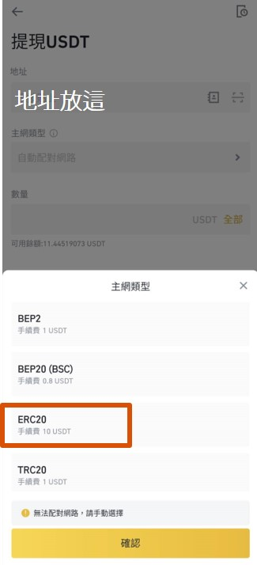

本篇文章不構成投資建議，僅作為資料整理之用
你應該要先閱讀我的另一篇Swarm全面解析，再決定要不要看教學步驟。🤐
如果你很著急，直接點註冊推薦碼，獨自開始你的ICO~
手機App註冊好像容易卡關，我推薦電腦網頁註冊。 KYC等待所需時間，我在6/5號以護照註冊，不到3小時就完成
時間線整理
CoinList註冊截止：06/11 20:00
主網上線：06/13 第一批公募：June 14 17:00(UTC) - June 15 04:59(UTC) 第二批公募：June 15 17:00(UTC) - June 16 04:59(UTC)
June 14 17:00(UTC)可以換算為台北時間(UTC+8)為六月15號凌晨01:00
解鎖日期：08/02
價格：1.92美元 第一批用戶最少購買100美元，最高500美元。 第二批用戶最少購買100美元，最高10,000美元。 當第一種代幣有剩餘才會開啟第二批。
早期私募大老的價格 2020/09 0.2美元一顆，募了200萬美元 2020/12 0.25美元一顆，募了400萬美元
步驟整理
- 註冊CoinList
- 完成KYC
- 回答題目，了解購買機制
- 多因素驗證
- 將USD轉進錢包
- 6/15 01:00進入到等候室取得號碼牌，有輪到你的話確認交易。
電腦版右手邊可以跳到你要的標題👉
準備的東西
- 護照、身分證、駕照其中一個，我個人推薦護照，可能KYC會比較容易過。
- 手機，會掃描你的臉做KYC。電腦視訊鏡頭實在不太行。
- 6/20號以前，100美元以上的加密貨幣，這是這次ICO的最低限額
- 註冊過程，英文好的人大概5分鐘吧
1. 註冊CoinList
從我的推薦連結註冊消費100Usd能得到10usd的回饋，你也可以選擇拿掉我的推薦碼用官網註冊。
 要注意名字在前姓氏在後，我是用護照的英文姓名，或許這樣KYC能比較快一些。
點擊Verify my Email，去收信箱確認信，注意註冊時和收這個信要用同一個裝置，我當時註冊用電腦，收信用手機就多搞了一次…
之後多登入不同台電腦或手機，也會需要再次收信。
要注意名字在前姓氏在後，我是用護照的英文姓名，或許這樣KYC能比較快一些。
點擊Verify my Email，去收信箱確認信，注意註冊時和收這個信要用同一個裝置，我當時註冊用電腦，收信用手機就多搞了一次…
之後多登入不同台電腦或手機，也會需要再次收信。
2. 完成KYC
 到公募頁面按下Register Now 如果你英文不錯應該能自己完成。👊 英文不錯的你或是之前KYC過CoiinList，你需要直接跳到3.回答題目
 這一頁告訴你無法參加的地區。包括加拿大、中國、美國和其他(伊朗、北韓、敘利亞、古巴、部分烏克蘭)，其實點進去看會發現美國應該是有一部分可以一部分不行，我不確定。
按下Get started
這一頁告訴你無法參加的地區。包括加拿大、中國、美國和其他(伊朗、北韓、敘利亞、古巴、部分烏克蘭)，其實點進去看會發現美國應該是有一部分可以一部分不行，我不確定。
按下Get started
 身份我選個人Person
我用王大明的假名，一樣使用英文姓名
下方要注意的大概是不能一人多號(當然!)
身份我選個人Person
我用王大明的假名，一樣使用英文姓名
下方要注意的大概是不能一人多號(當然!)
 We may ask you to provide proof of residence.可能會需要提供居住證明。
勾勾確認這個資訊是真實準確的
We may ask you to provide proof of residence.可能會需要提供居住證明。
勾勾確認這個資訊是真實準確的
 要填寫居住地址了，你應該會需要中華郵政網幫你翻譯你家地址。(夠貼心吧🤙)
填入出生日期、手機號碼
要填寫居住地址了，你應該會需要中華郵政網幫你翻譯你家地址。(夠貼心吧🤙)
填入出生日期、手機號碼
 開始驗證
⚠停留此頁面太久會跳出!
開始驗證
⚠停留此頁面太久會跳出!
 選第一個護照
選第一個護照
 如果你現在用電腦註冊，選第一個就會使用電腦鏡頭開始驗證。
我選了下面，用手機。
如果你現在用電腦註冊，選第一個就會使用電腦鏡頭開始驗證。
我選了下面，用手機。
 這邊可以選寄一封Email給自己，或是手機掃QRcode開始填。我選QRcode
⚠電腦網頁這邊不可以關掉！
這邊可以選寄一封Email給自己，或是手機掃QRcode開始填。我選QRcode
⚠電腦網頁這邊不可以關掉！
接下來沒有截圖，你要堅強！🙏 你用了手機掃描了你的QRcode後，一樣選擇Passport，然後會讓你把Passport對齊中間的框框，按下拍照。他會問你照片是否清晰可見。
接下來掃描你的臉，把你的臉對齊橢圓形會自動掃描(我的掃描是黑白灰色的掃瞄，難道是某種隱私功能？🤔)
掃描完成，上傳中。當你在手機看到下面這張圖
 就可以繼續電腦操作囉！
就可以繼續電腦操作囉！
3. 回答題目(蠻難的)
好，我們來到題目區。這裡我直接給你解答和翻譯，找幾題重要的來講一下。
注意一下，答案好像會換順序，要看仔細。
填錯也沒關係，他會告訴你第幾題有誤。
你可能需要大圖…應該不用我教你吧？電腦右鍵按一下，手機長按>新分頁開啟圖片！

- Swarm建立在？以太坊上。
- Swarm的技術paper是？Book of Swarm。
- 誰參與Swarm的資料經濟？節點營運者。
- 這次CoinList sale有多少代幣(第一批+第二批)？5,173,934枚代幣。
- 第一批核第二批的代幣數量怎麼分？第一批分完後，剩下的會分到第二批。
- Swarm的銷售機制？使用者會在Waiting room裡面拿到隨機位置，sale開始後才到的使用者會被放在waiting room裡的使用者的後面。
- 這次sale能用哪些貨幣購買？BTC、ETH、USDC、USDT。
- 價格和最多購買量？一個token1.92美元。第一批的限制為500美元。第二批的限制為10,000美元。
- 如果有人送出交易卻沒有完成會發生甚麼事？該筆購買可能會被取消，該使用者可能會被禁止未來參與coinList。
- 要在哪裡參與？CoinList.co
- 如果使用者用機器人搶ICO？使用者的帳號被停權，購買被取消。
比較重要大概是6. 這個waiting room的機制也是我第一次遇到，根據FAQ  我簡單找重點第二段：註冊的使用者會收到一封獨特連結的Email來進入佇列等待，在sale開始前抵達的使用者會被放進waiting room。請注意提早進到waiting room的並不會讓你在各好的位置。 (我：這裡他沒有說哪時候會寄信！) 當sale開始時(我理解的是6/15 01:00)在waiting room裡的使用者會隨機安排進排隊中，sale開始才進來的使用者會被排在隊伍的最後面。
DeadLine前為完成交易，該筆購買可能會被取消，該使用者可能會被禁止未來參與coinList。 (所謂DeadLine在另一篇FAQ，6/20 23:59(UTC)) 好，所以我理解順序如下：
- 收信，點連結，你會被登記為進入等待室，我猜會有一個網頁
- 06/15 01:00前在網頁中等待，時間到我們等待室裡的人會有一個隨機號碼，根據號碼排成一條隊伍。沒登記的和遲到的人就排在我們後面。
- (這部分腦補)輪到你的時候你確認交易要買多少。因為前面可能大買特買嘛，得輪到你才知道有沒有剩。
- 6/20前，你的錢包要有足夠的錢支付你的交易。
4. 多因素驗證
用多因素驗證保護你的帳號。右下角可以Skip，但如果公募開始你才再用這個…可能會尷尬😏
 有Google authenticator和Duo Mobile兩個驗證。Google的比較主流，其他交易所也常用。我選google。
有Google authenticator和Duo Mobile兩個驗證。Google的比較主流，其他交易所也常用。我選google。
這邊一樣不能截圖，要堅強！💪 下載App之後(我是Android，沒用過ios)，右下角的+號點下去，掃Qrcode。會跳出來一行CoinList(你的email)，還有一行六位數字。將數字填入旁邊的框框。 之後有需要Multi-factor authentication的時候也是同理，這個六位數字會60秒更新一次。另外碎碎念一下，曾經有個大富翁在交易所用多因素驗證Google+簡訊，還是被盜，因為他的手機直接被駭…恩…
 來到這一頁，代表你已經註冊成功！你已經註冊參加Swarm ICO。
來到這一頁，代表你已經註冊成功！你已經註冊參加Swarm ICO。
如果到這一頁，你其中幾項顯示橘色的Pending，代表資料正在審核中。我的經驗是，我邊寫教學，寫到這裡已經通通綠燈~
不過這個時候，你的錢包目前是空的！🧐
5. 將USD轉進錢包
就我的理解，你的錢包可以暫時是空的，如果有成功排到隊下訂單，6/20號以前將加密貨幣轉進來就可以。但我並不為此保證。
CoinList內建錢包，所以你沒辦法用外部「錢包」導入(MetaMask、Trust Wallet、Blocto等等)，只能將「加密貨幣」轉入CoinList錢包。(USDC、USDT、ETH等等) 如果你從來沒有轉過加密貨幣，你可以看一下這張圖👇  簡單的說，你需要將你的新台幣轉成美元穩定幣後，存進coinList中買東西 這部分有點複雜，如果你從未轉過加密貨幣，你可a00能會搞錯。所以我們派出…Gif動圖來幫助你💪
 根據這個GIF，你就找到了CoinList的錢包地址，你就可以將Bito、Max、幣安等等交易所，將USDT經由ERC20鏈，轉帳到CoinList中。  務必注意要是ERC20！用錯鏈大機率是會消失的！就向銀行轉帳帳號打錯一樣！ (我剛剛試用MAX交易所，他貌似最近會幫你自動識別鏈種，不確定。)
6. 6/15 01:00進入到等候室取得號碼牌，有輪到你的話確認交易
記得前面有提到，CoinList會寄一封Emai給你。
到這邊我們就只能等待啦~這部分還沒開始我也是兩眼一黑。
看到這邊先為你自己喝采！你成功參與了加密貨幣的ICO生態！😉
我開了一個Line群組讓大家可以討論關於CoinList和這次的ICO。不管是註冊上遇到問題，或是當天ICO有狀況都歡迎在這裡發言，我們在群組見！